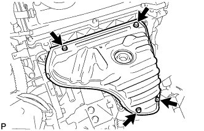
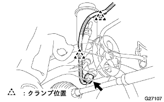
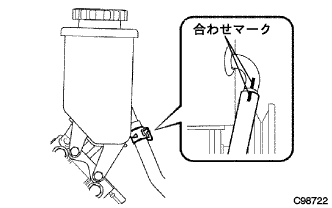
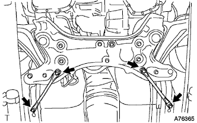

パワーステアリング リンクASSY（4WD） 取り外し |
| 1. フロントタイヤ直進状態点検 |
| 2. ステアリングコラムホールカバー プレート取りはずし |
 |
クリップ2個をはずし、ステアリングコラムホールカバープレートを車両から取りはずす。
| 3. ステアリングスライディング ヨークSUB-ASSY切り離し |
 |
ステアリングホイールが回転しないようにシートベルトを取り付ける。
 |
スライディングヨークのコラム側(A)のボルトをゆるめる。
スライデイングヨークのギヤ側(B)のボルトを取りはずす。
スライディングヨークとインタミディエイトシャフトに合わせマークを付け、スライディングヨークを切り離す。
| 4. ステアリングコラムホール カバーSUB-ASSY NO.1切り離し |
 |
クリップAをはずし、ホールカバーNo.1をボデーから切り離す。
| 5. パワーステアリングフルード抜き取り |
| 6. フロントタイヤ取りはずし |
| 7. タイロッド エンドSUB-ASSY LH切り離し |
 |
コッターピンおよびキャッスルナットを取りはずす。
SSTを使用して、タイロッドエンドLHをステアリングナックルから切り離す。
| 8. タイロッド エンドSUB-ASSY RH切り離し |
| 9. エンジンアンダ カバー LH取りはずし |
ボルト2本およびスクリュ2本をはずし、エンジンアンダカバーLHを取りはずす。
| 10. エンジンアンダ カバー RH取りはずし |
ボルト2本およびスクリュ2本をはずす。
ナットをはずし、エンジンアンダカバーRHを取りはずす。
| 11. プロペラシャフト ウィズ センタベアリングASSY取りはずし |
 |
図の箇所に合わせマークをつけ、ボルト４本、ワッシャおよびナット各４個をはずし、プロペラシャフトASSY RRをディファレンシャルフランジから切り離す。
 |
 |
ボルト４本をはずし、プロペラウィズセンタベアリングシャフトASSYを取りはずす。
 |
プロペラウィズセンタベアリングシャフトASSYを取りはずした後、トランスファオイルの流出を防ぐため、エクステンションハウジングにSSTを挿入する。
| 12. オキシジェン センサ取りはずし |
クランプおよびコネクターを切り離す。
 |
SSTを使用して、オキシジエンセンサを取りはずす。
| 13. エキゾーストマニホルドヒート インシュレータ NO.1取りはずし |
|  |
ボルト4本をはずし、エキゾーストマニホルドヒートインシュレータを取りはずす。
| 14. フロントサスペンション クロスメンバSUB-ASSY切り離し |
 |
ボルト2本をはずし、パワーステアリングギヤASSY W/ベーンポンプASSYを切り離す。
 |
キャッスルナットをはずし、SSTを使用してロワーアームのボールジョイント部を、ステアリングナックルから切り離す。
 |
ボルト4本をはずし、フロントサスペンションメンバリインホースメントRHおよびLHを取りはずす。
 |
ボルトおよびナット2個をはずし、エンジンマウンティングインシュレータRRを切り離す。
 |
ミッションジャッキなどでサスペンションクロスメンバを支持する。
図の位置のボルト4本を取りはずし、ミッションジャッキでエキゾーストパイプASSY FRが抜けるだけのすき間を確保する。
| 15. エキゾーストパイプASSY FR取りはずし |
ボルト2本をはずし、エキゾーストパイプASSY FRを取りはずす。
| 16. ベーンポンプ ステー RR取りはずし |
|  |
オイルプレッシャセンサハーネスのクランプ2箇所をステーリアおよびオイルリザーバASSYから切り離し、コネクターを切り離す。
 |
ボルトAおよびボルトBをゆるめ、ベーンポンプASSYをエンジン側にずらし、Vベルトを切り離す。
ボルトAおよびボルトBを仮締めし、ベーンポンプASSYを固定させる。
 |
ボルトをはずし、ステーリアおよびヒートインシュレーターをベーンポンプASSYから取りはずす。
| 17. プレッシャフィード チューブASSY切り離し |
 |
ユニオンナットレンチ17を使用して、プレッシャフィードチューブASSYを切り離す。
|  |
クリップをずらし、合わせマークを付け、ホースNo.1を切り離す。
| 18. フロントスタビライザ ボルト取りはずし |
フロントスタビライザボルトをスパナ（10mm）で固定し、ナット2個を取りはずす。
フロントスタビライザバークッションリテーナNo.1を4個、フロントスタビライザクッション4個、フロントスタビライザバークッションリテーナNo.2およびフロントスタビライザボルトを取りはずす。
 |
反対側も同様の手順で取りはずす。
| 19. スタビライザ バー FR取りはずし |
ボルト4本をはずし、フロントスタビライザブラケットNo.1 LHおよびRHを取りはずす。
左右のフロントスタビライザバーブシュNo.1をスタビライザバーから取りはずす。
フロントスタビライザバーを車両右側から取りはずす。
| 20. パワーステアリング リンクASSY取りはずし |
ボルト2本をはずし、ステアリングリンクASSYをクロスメンバから切り離す。
|  |
ボルト4本をはずし、リインフォースメントLHおよびRHを取りはずす。
ミッションジャッキでクロスメンバを支持する。
 |
ボルト4本をはずし、クロスメンバを少し下げ、ステアリングリンクASSYをプレッシャフィードチューブASSYと一体で取りはずす。